DEBANGA RAJ NEOG
COMPUTER VISION RESEARCHER, ENTREPRENEUR
I received my Ph.D. in Computer Science from The University of British Columbia (UBC), Vancouver, Canada in 2018, co-advised by Prof. Dinesh K. Pai and Prof. Robert J. Woodham. Before that, I earned my B.Tech in Electronics and Communication Engineering from the Indian Institute of Technology Guwahati (IITG). At UBC, I was part of the Sensorimotor Systems Lab and took part in several collaborative and interdisciplinary projects. During my Ph.D, I worked in research projects in computer vision, computer graphics, neuroscience, augmented reality and virtual reality. In my Ph.D thesis "Measurement and animation of the eye region of the human face in reduced coordinates", I investigated how we can use vision-based human face capture to animate realistic looking facial deformations, focusing mainly in the eye region. I am a recipient of Mitacs Globalink Research Award under which I worked with the researchers in INRIA Grenoble Rhone-Alpes, France. I have also co-founded Nytilus, a startup focusing on computational imaging solutions to solve problems in industrial inspections, supported by global accelerators, such as Techstars.
Research Interest
Computer Vision (Eye tracking, face tracking), Computer Graphics (Facial animation, facial muscle simulation), AR/VR (Image-based scene capture for AR content generation), Computational Imaging (High dynamic range imaging, polarimetry-based inspection)
Collaborations
2016-2017: IMAGINE Lab, INRIA Grenoble Rhone-Alpes, France
2011-2012: IMAGER Lab, UBC, Canada
2011-2012: Iwahori Lab, Chubu University, Japan
2010-2011: Computer Vision and Fuzzy Systems Lab, Hanyang University, South Korea
2010-2012: Image Processing and Computer Vision (IPCV) Lab, IIT Guwahati, India
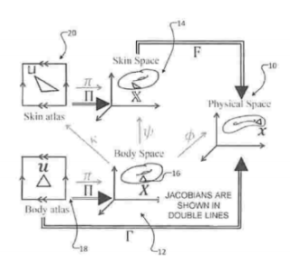
Methods and Systems for Computer-based Skin Animation
Dinesh Pai, Duo Li, Shinjiro Sueda, Debanga R Neog
US Patent, July 3, 2018
A software based on this patent was used in the 2016 winter box office hit "Fantastic Beasts and Where to Find Them".
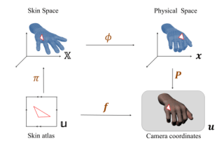
Measurement and animation of the eye region of the human face in reduced coordinates
"The goal of this dissertation is to develop methods to measure, model, and animate facial tissues of the region around the eyes, referred to as the eye region."
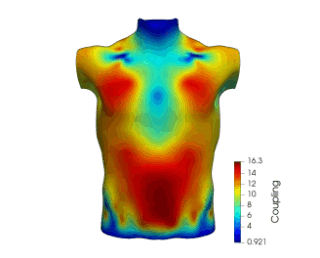
The Human Touch: Measuring Contact with Real Human Soft Tissues
Dinesh K. Pai, Austin Rothwell, Pearson Wyder-Hodge, Alistair Wick, Ye Fan, Egor Larionov, Darcy Harrison, Debanga R. Neog, Cole Shing
ACM Transactions on Graphics, 37 (4) (SIGGRAPH), 2018. [Journal Rank 1 (h5-index): Computer Graphics]
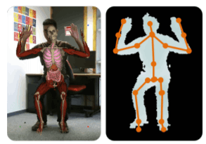
Anatomical Augmented Reality with 3D Commodity Tracking and Image-space Alignment
Armelle Bauer, Debanga R. Neog, Ali-Hamadi Dicko, Dinesh K. Pai, Jocelyne Troccaz, Francois Faure, Olivier Palombi
Computers and Graphics, Elsevier, 2017. [Journal Rank 4 (h5-index): Computer Graphics]
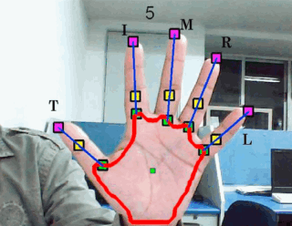
Hand Pose Recognition from Monocular Images by Geometrical and Texture Analysis
Manas Kamal Bhuyan, Karl F. MacDorman, Mithun Kumar Kar, Debanga R. Neog, Brian C. Lovell, Prathik Gadde
Journal of Visual Languages & Computing, June, 2015.
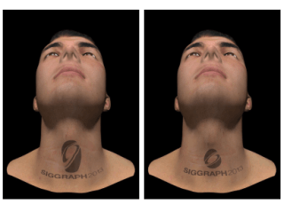
Thin Skin Elastodynamics
Duo Li, Shinjiro Sueda, Debanga R. Neog, Dinesh K. Pai
ACM Transactions on Graphics, 32 (4) (SIGGRAPH), 2013. [Journal Rank 1 (h5-index): Computer Graphics]
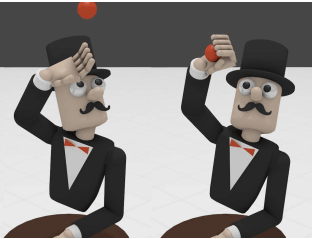
Eyecatch: Simulating Visuomotor Coordination for Object Interception
Sang Hoon Yeo, Martin Lesmana, Debanga R. Neog, Dinesh K. Pai
ACM Transactions on Graphics, 31 (4) (SIGGRAPH), 2012. [Journal Rank 1 (h5-index): Computer Graphics]
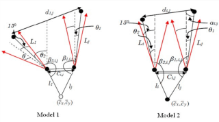
Fingertip Detection for Hand Pose Recognition
Manas Kamal Bhuyan, Debanga R. Neog, Mithun Kumar Kar
International Journal on Computer Science and Engineering, 4(3), 2012
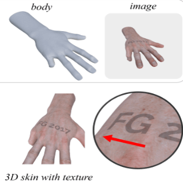
Seeing Skin in Reduced Coordinates
Debanga R. Neog, Anurag Ranjan, Dinesh K. Pai
2017 12th IEEE International Conference on Automatic Face & Gesture Recognition (FG 2017), May, 2017
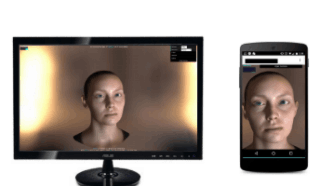
Interactive Gaze Driven Animation of the Eye Region
Debanga R. Neog, João L. Cardoso, Anurag Ranjan, Dinesh K. Pai
Best Paper Award, Proceedings of the 21st International Conference on Web3D Technology, July, 2016.
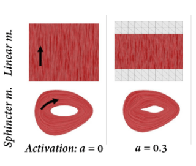
Biomechanical Modeling and Control of Facial Muscles
Debanga R. Neog, Dinesh K. Pai
NorthWest Biomechanics Symposium, Vancouver, July, 2016.
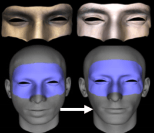
Gaze Driven Animation of Eyes
Debanga R. Neog, Anurag Ranjan, João L. Cardoso, Dinesh K. Pai
Proceedings of the 14th ACM SIGGRAPH / Eurographics Symposium on Computer Animation, July, 2015.
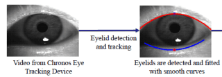
Biomechanical Modeling and Measurement of Eyelid Movement
Debanga R. Neog, Dinesh K. Pai
Gordon Research Conference on Eye Movement, Boston, MA Sep, 2013.
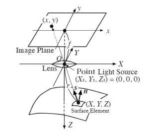
Generating lambertian image with uniform reflectance for endoscope image
Yuki Shimasaki, Yuji Iwahori, Debanga R. Neog, Robert J. Woodham, M. K. Bhuyan
International Workshop on Advanced Image Technology (IWAIT2013)
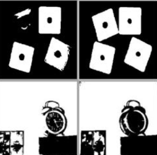
An Interval Type-2 Fuzzy Approach to Multilevel Image Segmentation
Debanga R. Neog, Muhammad Amjad Raza, Frank Chung-Hoon Rhee
2011 IEEE International Conference on Fuzzy Systems (FUZZ-IEEE 2011), June, 2011
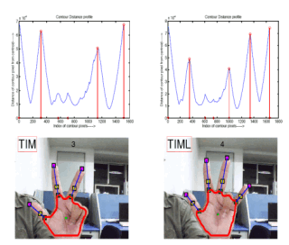
Hand Pose Recognition using Geometric Features
Manas Kamal Bhuyan, Debanga R. Neog, Mithun Kumar Kar
National Conference on Communications, 2011
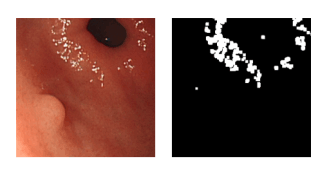
Shape from an Endoscope Image Using Extended Fast Marching Method
Debanga R. Neog, Yuji Iwahori, Manas Kamal Bhuyan, Robert J. Woodham, K Kasugai
Indian International Conference on Artificial Intelligence, 2011
Awrads
2016: Best Paper Award, the 21st International Conference on 3D Web Technology (Web3D '16)
2016: Mitacs Globalink Research Award - INRIA, MITACS and UBC
2012-2016: Four Year Doctoral Fellowship, University of British Columbia
2013: Gordon Research Trainee Fellowship, Gordon Research Conference on Eye Movements
2011: Japanese Research Merit Award, Inspec Inc. Japan
Personal
• I love to travel! I have visited 18 countries so far around the globe.
• I have also hosted several meetups related to language exchange and artificial intelligence in Canada and Europe.
• I was featured in Entrepreneur Middle-East magazine.